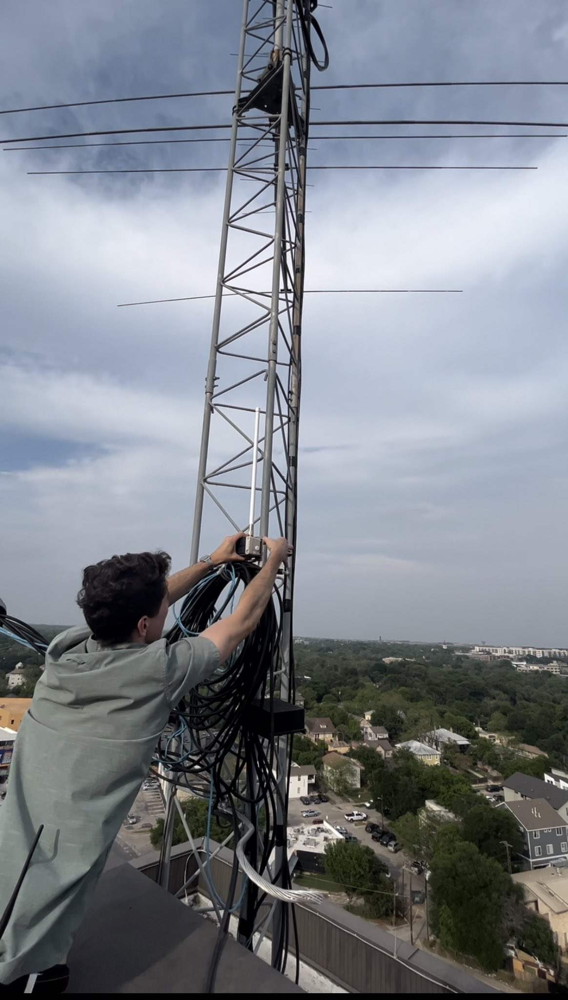
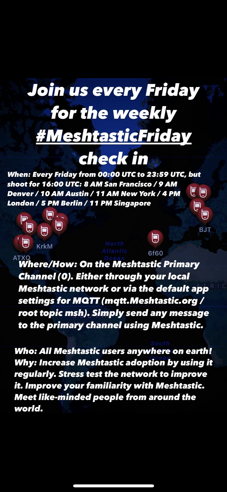

Austin Mesh is a community group working to build a mesh network of solar-powered meshtastic radios in Austin. This network acts like a city-wide text messaging system, allowing people to communicate publicly or privately with anyone on the network. All of this happens without any external infrastructure - no power, no cell phone towers, no internet.
How does it work?
We have set up a number of solar-powered radio repeaters in Austin. These radios communicate at 900 MHZ using the LoRa protocol.
The radios mesh using the open-source software meshtastic.
Users can connect to these repeaters by Bluetooth if they’re close enough or they can use their own handheld nodes which will also act as repeaters. The messages hop from node to node, extending the reach of the network and ensuring everyone receives every message.
What can it do?
Meshtastic is a bit like a decentralized social media platform or SMS app. It has a number of different features which are similar to anyone who has sent a text message or posted on social media.
1) Primary Channel: You can broadcast an unencrypted message on to the Primary Channel and everyone on your mesh will see it. This is a bit like “posting” on a social media platform.
2) Group Channels: You can send an encrypted message to a select group of people on a Secondary Channel and everyone who is subscribed to that channel will get it. People can join the channel if you provide them with a an encryption key which you can send to them via Direct Message or which they can scan from a QR code in person. This is a bit like a private group on social media, or a group text message chain on SMS.
3) Direct Messages: You can send encrypted direct messages to people on the mesh. This is like a private text message or a DM on social medial.
4) Location: If you choose to enable it you can send your location to the mesh and it will show up on everyone’s map in the app.
5) Connect worldwide: If anyone on your local mesh is running an MQTT gateway your local mesh will connect to the other meshes around the world. This can allow you to broadcast messages to everyone globally or send encrypted messages to groups or individuals worldwide.
6) Send telemetry data: Nodes can be set up to send telemetry data like the battery status or signal strength.; this is helpful for monitoring remote solar-powered nodes. Nodes can also have sensors connected to them which allow them to send data on temperature, humidity, or air pressure which allow them to act like weather stations.
Can you explain it like I'm 5?
Pretend you're sitting in class and want to send a note to everyone in the class.
You write your note on a piece of paper and copy it three times.
The message can be up to 228 characters - about as long as this paragraph so far.
You hand those three pieces of paper to the three people around you.
Then those three people re-write the message three times and hand it to the three people around them and so on.
Now imagine a big gust of wind comes and blows away some of the messages.
If even just a few people saw the note and keep copying and re-sending it, eventually everyone will get a copy of the note.
This is like sending and unencrypted message to everyone on the network.
Now imagine you want to send a message to a single person or a select group of people but you don't want other people who see the note to be able to read it.
You could write the note using a secret language. You could then hand a decoder key to your friend or to a group of friends and they could decode the message.
The message still gets passed the same way - with every single person writing the message a few times and handing it to everyone - but only those people with the decoder key will be able to understand the message.
This is like sending an encrypted direct message or encrypted group message.
Austin Mesh works the same way as this paper example, but instead of sending paper notes we're using digital text messages and sending it with radio waves.
Our radios are solar powered and they don’t need any internet or cell phone coverage. This means they will work even if the power is out.
Why build this network?
1) Community: Because this is essentially a city-wide group text message chain we are hoping people use the network to build community. Tell the group where your band is playing tonight, chat about local politics, ask for a good cheese dip recipe, etc.
2) Disasters: If the power goes out, like during the 2021 Winter Storm Uri, this network should allow people to continue to communicate with each other without electricity, cell phone coverage, or internet. This big city-wide group text chain could allow people to ask for help or offer assistance. People could get information about where warming centers are open or ask who in their neighborhood still has power. People could also send encrypted direct messages to check in on friends and family or they could send encrypted group messages to coordiante privately in a group.
3) Decentralized, Open, and Resilient: Austin Mesh is decentralized - there is no central server or corporation - all the communication bounces through the entire mesh. Austin Mesh is open to everyone - you don't have to ask permission to join and all of the software is open-source. Austin Mesh is resilient - our solar-powered radios don't need cell phone towers, internet access, or electricity. We hope this project will inspire others to build things that are decentralized, open, and resilient.
How can I join the network?
1) Get a Meshtastic Radio.
You can build one yourself for about $35. The offical Meshtastic page keeps a current list of Supported Hardware.
You can also buy a pre-built non-solar node for $50-$100 on Etsy or eBay.
If you can afford it, we recommend you buy a pre-built solar-powered node for about $125 on Etsy and mount it as high off the ground as you can.
2) Download the Meshtastic App on your iPhone or Android.
3) Pair your radio to your phone with bluetooth.
4) Open the Meshtastic app and say hi!
How I can join the group?
You can email us to become an official member and attend our in-person meetings in Austin. You can also follow us on Twitter, Instagram, TikTok, and YouTube.
What kind of coverage does the mesh network have?
As of Spring 2023 we have coverage throughout most of downtown and central Austin. We're actively working to expand this coverage.

Meshtastic Friday
Austin Mesh created a weekly check-in called Meshtastic Friday. Join us every Friday for the weekly check in.
When: Every Friday from 00:00 UTC to 23:59 UTC, but shoot for 16:00 UTC: 8 AM San Francisco / 9 AM Denver / 10 AM Austin / 11 AM New York / 4 PM London / 5 PM Berlin / 11 PM Singapore
Where: On the Meshtastic Primary Channel (0). Either through your local Meshtastic network or via the default app settings for MQTT (mqtt.Meshtastic.org / root topic msh)
How: Simply send any message to the primary channel using Meshtastic.
Who: All Meshtastic users anywhere on earth!
Why: Increase Meshtastic adoption by using it regularly. Stress test the network to improve it. Improve your familiarity with Meshtastic. Meet like-minded people from around the world.

This site is (c) by Will Martin and is licensed under a Creative Commons Attribution-ShareAlike 4.0 International License.